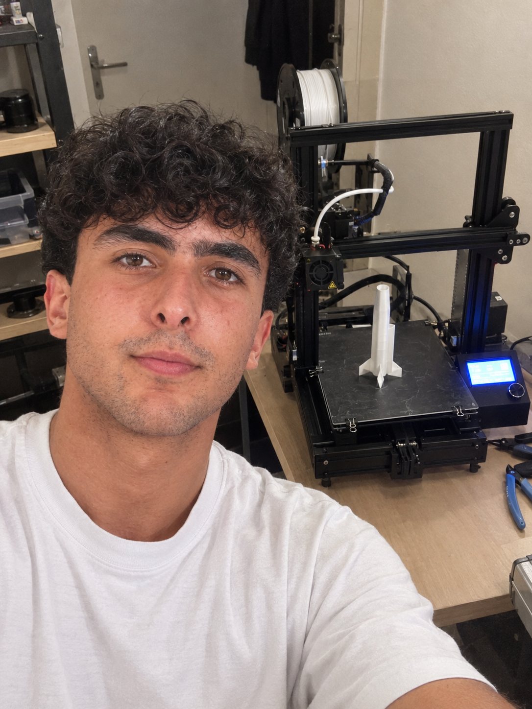
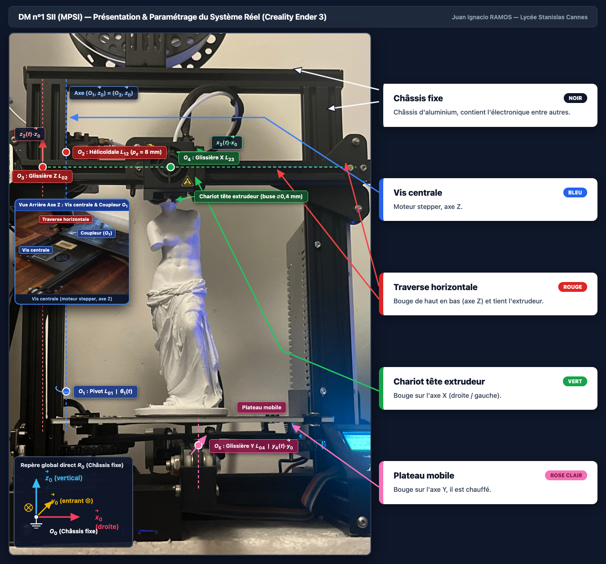
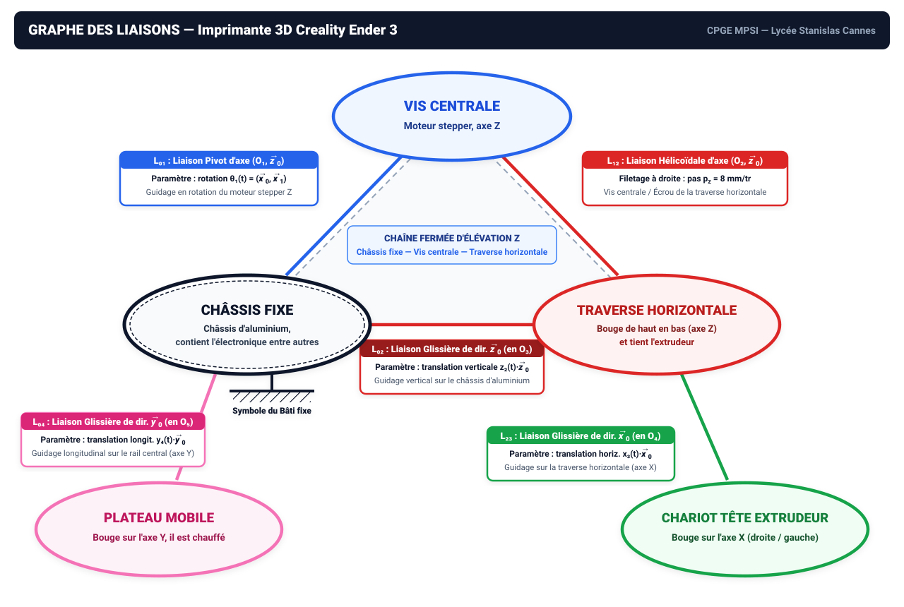

Nom :RAMOS
Prénom :Juan Ignacio
Classe :CPGE MPSI (Lycée Stanislas Paris)
Système étudié :Imprimante 3D FDM Creality Ender 3
DM n°1 — Modélisation des Liaisons & Schématisation
Sciences Industrielles de l'Ingénieur (SII) — Mme M. Prot & M. Cullaz
Séquence 2 (CM4) : Cinématique du Solide Indéformable • Norme ISO 3952
Bijection Couleur $\leftrightarrow$ $E_k[\mathcal{R}_k]$ :
$E_0[\mathcal{R}_0]$ Bâti fixe (Noir)
$E_1[\mathcal{R}_1]$ Vis mère $Z$ (Bleu)
$E_2[\mathcal{R}_2]$ Portique $X$ (Rouge)
$E_3[\mathcal{R}_3]$ Tête Buse (Vert)
$E_4[\mathcal{R}_4]$ Plateau $Y$ (Orange)



Structure Topologique & Nombre Cyclomatique ($\gamma = 1$)
- Graphe connexe à $N = 5$ sommets ($E_0 \dots E_4$) et $L = 5$ liaisons : $\gamma = L - N + 1 = 5 - 5 + 1 = 1$ unique boucle fermée.
- Architecture hybride : 1 chaîne fermée d'élévation verticale $Z$ ($E_0 - E_1 - E_2 - E_0$) + 2 chaînes ouvertes séries ($E_2 - E_3$ selon $\vec{x}_0$, $E_0 - E_4$ selon $\vec{y}_0$).
Hypothèses Fondamentales du Solide Indéformable (CM4)
- Invariance des distances : $\forall A, B \in E_k,\; \|\overrightarrow{AB}\| = \text{cte} \iff \left.\frac{\mathrm{d}\overrightarrow{AB}}{\mathrm{d}t}\right|_{\mathcal{R}_k} = \vec{0}$.
- Piège de concours (CM4 § 3.3) : Le champ des vitesses est un torseur équiprojectif, mais le champ des accélérations n'est PAS un torseur ($\vec{\Omega}\wedge(\vec{\Omega}\wedge\overrightarrow{AB})$).